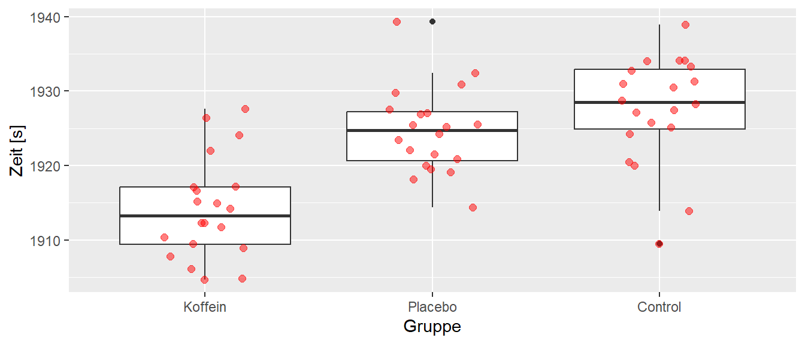
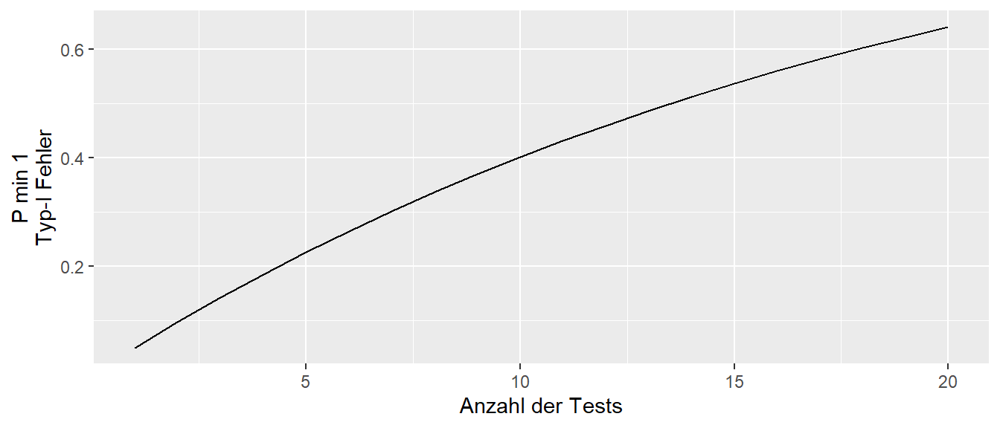
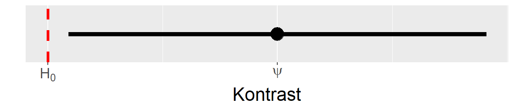

28 Lineare Kontraste
Bei der Analyse eines CRDs ist bisher nur untersucht worden, ob es irgendwo zwischen den verschiedenen Faktorstufen einen relevanten Unterschied gibt. Im nächsten Schritt soll daher nun bestimmt werden zwischen welchen der verschiedenen Faktorstufen ein Unterschied besteht. D.h. es müssen immer paarweise Vergleiche zwischen den Faktorstufen durchgeführt werden, um zu überprüfen zwischen welchen ein Unterschied besteht. Im einfachen Fall aus dem Laufbeispiel mit drei Faktorstufen (Koffein, Placebo und Control, siehe Abbildung 28.1) können daher drei verschiedene paarweise Vergleiche durchgeführt werden.
D.h. in dem Beispiel können Koffein mit Placebo, Koffein mit Control und Placebo mit Control miteinander verglichen werden. In allen drei Fällen werden die Mittelwerte \(\mu_i\) der jeweiligen Faktorstufen miteinander verglichen.
Ein Problem bei diesen Vergleich ist allerdings, dass jede Faktorstufe in mehreren (im Beispiel zwei) Vergleichen beteiligt ist. Wenn nun mehr Faktorstufen vorhanden sind, dann ist entsprechend jeder Gruppenmittel noch öfter in den paarweisen vergleichen beteiligt. Allgemein gilt bei \(K\)-Faktorstufen:
\[\begin{equation} \text{Anzahl der Paarvergleiche} = K(K-1) \end{equation}\]
Dadurch, das jeder Mittelwert \(\mu_i\) in mehreren Vergleichen beteiligt ist, führt dies zu dem Problem der Mehrfachvergleiche .
28.1 Das multiple-comparison Problem
Allgemein gilt, wenn mehrere statistische Tests durchgeführt werden und der \(\alpha\)-Fehler betrachtet wird, dann folgt über die Gesamtheit der Tests, dass der \(\alpha\)-Fehler für einen individuellen Test nicht mehr gleich dem nominalen Level, also \(\alpha = 0.05\) ist. Tatsächlich ist der \(\alpha\)-Fehler in diesem Fall deutlich höher als \(\alpha = 0.05\). Werden beispielsweise \(100\) verschiedene Tests auf dem gleichen Datensatz durchgeführt, dann würden unter der Annahme, dass die \(H_0\) zutrifft, im Mittel \(5\) Tests statistisch signifikant werden, ohne das ein Effekt besteht. Daher könnte eine Strategie sein, möglichst viele unterschiedliche Tests auf einem Datensatz durchzuführen, irgendeiner davon wird schon signifikant werden.
Die Überlegung dazu ist die Folgende. Es werden \(m\) Hypothesen getestet. Jede dieser Hypothese soll für sich genommen eine Irrtumswahrscheinlichkeit von \(\alpha\) haben und in allen Fällen sei die \(H_0\) zutreffend. Dann haben ist für jeden einzelnen Test die Wahrscheinlichkeit eine korrekte Entscheidung zu treffen \(P(\text{korrekt Entschieden}) = 1 - \alpha\). Wenn nun \(m\) unabhängige Hypothesentestungen durchführt werden, wird die Wahrscheinlichkeit sich korrekt zu entscheiden insgesamt \(m\)-Mal miteinander multipliziert.
\[\begin{equation} P(\text{korrekte Entscheidung}) = (1-\alpha)\cdots(1-\alpha) = (1-\alpha)^m \end{equation}\]
Das Komplementär dieser Wahrscheinlichkeit ist dann die Wahrscheinlichkeit mindestens eine falsche Entscheidung zu treffen. Daraus folgt, dass diese Wahrscheinlichkeit, mindestens einen \(\alpha\)-Fehler zu begehen, folgt \(1 - P(\text{korrekte Entscheidung})\) ist.
\[\begin{equation} P(\text{min. }1\text{ Type-I Fehler}) = 1 - (1-\alpha)^m \end{equation}\]
Wird diese Wahrscheinlichkeit gegen die Anzahl der Test abgetragen, ergibt sich der folgende Zusammenhang (siehe Abbildung 28.2).

In Abbildung 28.2 ist zu erkennen, dass die Wahrscheinlichkeit für mindestens einen \(\alpha\) sehr schnell mit der Anzahl der Tests ansteigt. D.h. ab etwa 15 Tests liegt die Wahrscheinlichkeit für ein statistisch signifikantes Ergebnis bei etwas über \(50\%\). Daher, umso mehr Tests in einer Untersuchung durchgeführt werden, umso höher die Wahrscheinlichkeit, dass ein Test anspringt. Um dieses Problem einzufangen, sollte daher für die Anzahl der Tests kontrolliert werden (siehe allerdings Rothman (1990) für eine Gegenposition).
Ein Umstand macht die Kontrolle der \(\alpha\)-Fehlerrate allerdings etwas undurchsichtig, da nicht eindeutig ist auf welchem Level die Fehlerkontrolle stattfinden soll. In Abbildung 28.3 ist die typische Struktur eines Experiments dargestellt.
In dem Beispiel sind zwei Endpunkte in dem Experiment geplant gewesen (Primary und Secondary Endpoint). Diese könnte zum Beispiel die Squad und die Hip thrust Leistung in der Stichprobe sein. Beide Endpunkte wurden unter jeweils zwei verschiedenen Faktoren untersucht (z.B. Ernährungsergänzung und Kontrolle). Faktor 1 besitzt drei Faktorstufen. D.h. es können drei paarweise Vergleiche zwischen den Mittelwerten (MW) der drei Stufen durchgeführt werden. Ähnliches trifft aber auch auf Faktor 2 zu. Bei zwei Endpunkten verdoppelt sich noch einmal die Anzahl der Test bzw. wenn bei noch weitere Endpunkte haben entsprechend mehr.
Dies führt dazu, dass mehrere Ebenen vorliegen, auf denen ein Fehlerkontrollmechanismus ansetzen kann. Die Kontrolle kann entweder auf der Ebene der Endpunkte, der Ebene der Faktoren innerhalb eines Endpunktes oder auf der Ebene der einzelnen Faktorstufen innerhalb eines Faktors innerhalb eines Endpunktes kontrolliert werden. Von oben nach unten werden diese Ebenen als Experiment , family und test wise error rates bezeichnet. Die Kontrolle ist dabei von unten nach oben immer strikter da die Anzahl der zu berücksichtigenden Test immer größer wird. Dazu kommt, dass es leider in der Literatur dazu keinen klaren Konsens gibt auf welcher Ebene die Mehrfachtestung berücksichtigt werden sollte. In den meisten Fällen wird daher auf der test-Ebene kontrolliert.
28.2 Kontraste \(\psi\)
Im folgenden wird ein etwas allgemeineres Rahmenwerk aufgebaut um Vergleiche zwischen Faktorstufen durchzuführen. Dazu wird zunächst das Konzept eines Kontrasts für Mittelwertsvergleiche benötigt.Ein Kontrast \(\psi\) ist dabei ein Spezialfall einer sogenannten Linearkombination . Allgemein hat eine Linearkombination die folgende Form.
\[\begin{equation*} \sum_{i=1}^K c_i \cdot a_i \end{equation*}\]
Eine Linearkombination besteht aus der Summe von Produkten bei denen jeweils ein Element \(a_i\) mit einem Faktor \(c_i\) multipliziert wird. Die \(c_i\)s werden als Gewichte bezeichnet, daher wird auch oft in der Literatur die Schreibweise \(w_i \cdot a_i\) verwendet vom Englischen \(w\)eights. Seien zum Beispiel ein Vektor \(\boldsymbol{a}\) mit den Elementen \(\boldsymbol{a} = (1,2,3)\) und ein Gewichtsvektor mit den Elementen \(\boldsymbol{c} = (1/2,1/2,1/3)\) gegeben. Dann hat die entsprechende Linearkombination die folgende Form:
\[\begin{equation} \sum_{i=1}^K c_i \cdot a_i = \frac{1}{2}\cdot 1 + \frac{1}{2}\cdot 2 + \frac{1}{3}\cdot 3 = 2\frac{1}{2} \label{eq-ed-lc-ex-01} \end{equation}\]
Ein Kontrast \(\psi\) ist nun ein Spezialfall einer Linearkombination. Beim einem Kontrast sind die Gewichte \(a_i\) so gewählt, dass die Summe der Gewichte \(a_i\) Null ergibt. D.h. es gilt:
\[\begin{equation*} \psi = \sum_{i=1}^K c_i \cdot a_i \quad \text{mit } \sum_{i=1}^K c_i = 0 \end{equation*}\]
Das vorhergehende Beispiel der Linearkombination in Formel \(\eqref{eq-ed-lc-ex-01}\) stellt somit keinen Kontrast dar, da \(1/2 + 1/2 + 1/3 = 1\frac{1}{3} \neq 0\) gilt. Dagegen wäre die folgende Linearkombination mit \(\boldsymbol{c} = (1/2,1/2,-1)\) ein Kontrast, da \(\frac{1}{2} + \frac{1}{2} - 1 = 0\).
\[\begin{equation*} \sum_{i=1}^K c_i \cdot a_i = \frac{1}{2}\cdot 1 + \frac{1}{2}\cdot 2 - \frac{1}{3}\cdot 3 \end{equation*}\]
Tipp
Linearkombination können in R einfach über das Skalarprodukt berechnet werden.
c_i <- c(1/2,1/2,1/3)
a_i <- 1:3
t(a_i) %*% c_i [,1]
[1,] 2.5Was einen Spezialfall des Matrizenprodukts darstellt.
mat <- matrix(1:6, nr=2, byrow=T)
mat [,1] [,2] [,3]
[1,] 1 2 3
[2,] 4 5 6mat %*% c_i [,1]
[1,] 2.5
[2,] 6.528.2.1 Struktur von Kontrasten
Seien nun die Elemente von \(\boldsymbol{a}\) die Modellparameter eines statistischen Models, die Modellparameter könnten z.B. die Mittelwerte dreier Faktorstufen bilden. Dann ergibt sich die folgende Definition für einen Kontrast:
Definition 28.1 (Kontrast) Ein Kontrast \(\psi\) ist eine Linearkombination von Modellparametern deren Koeffizienten sich zu Null addieren.
Zum Beispiel der Fall des CRD Modells mit einem Faktor und \(K\) Faktorstufen.
\[\begin{equation*} Y_{ij} = \mu + \tau_i + \epsilon_{ij} \end{equation*}\]
Die jeweiligen Effekte der Faktorstufen werden durch die Parameter \(\tau_i,i=1,\ldots,K\) (die Abweichungen der Gruppenmittelwerte \(\mu_i\) vom Gesamtmittelwert \(\mu\), repräsentiert. Die allgemeine Form eines Kontrasts \(\psi\) für ein CRD Modell hat dann die Form:
\[\begin{equation} \psi = \sum_{i=1}^k c_i \tau_i, \quad \text{mit } \sum_{i=1}^k c_i=0 \label{eq-ed-lc-crd-con} \end{equation}\]
In den meisten Fällen werden mittels eines Kontrasts die Mittelwerte \(\mu_i\) der Faktorstufen miteinander verglichen. Der Effekt der \(i\)-ten Stufe, der Mittelwert der \(i\)-ten Stufe, setzt sich nach dem Modell zusammen aus der Summe aus dem Gesamtmittelwert \(\mu\) und dem Effekt der Faktorstufe \(\tau_i\). D.h. \(\mu_i = \mu + \tau_i\) und dieser ist bei einem CRD gleich dem Gruppenmittelwert \(\bar{y}_i\). D.h. ein Schätzer für einen Kontrast \(\hat{\psi}\) hat die Form.
\[\begin{equation} \hat{\psi} = \sum_{i=1}^K c_i (\hat{\mu} + \hat{\tau_i}) = \sum_{i=1}^K c_i \bar{y}_{i} \end{equation}\]
Unter Verwendung der Eigenschaft, dass die Summe der Gewichte \(c_i\) eines Kontrasts \(\psi\) zu \(0\) addieren, gilt:
\[\begin{equation*} \psi=\sum_{i=1}^Kc_i(\mu + \tau_i) = \sum_{i=1}^Kc_i \mu + \sum_{i=1}^K c_i\tau_i=\mu\underbrace{\sum_{i=1}^K c_i}_{=0} + \sum_{i=1}^K c_i\tau_i = \sum_{i=1}^K c_i\tau_i \end{equation*}\]
Beim vorliegen von Daten, kommen überall über die Variablen die üblichen Hütchen für Schätzer und aus \((\hat{\mu}+\hat{\tau}_i\) wird \(\bar{y}_{i}\). D.h. über den Vergleich der Mittelwerte \(\bar{y}_i\) mittels eines Kontrast können die Modellparameter \(\tau_i\) miteinander verglichen werden.
Durch eine geschickte Kombination von \(c_i\) können nun gewünschte Gruppenvergleiche durchgeführt werden. Im Beispiel der Laufdaten, können mittels des folgenden Schemas von \(c_i\)s die paarweisen Gruppenvergleich als Kontraste definiert werden (siehe Tabelle 28.1).
| Kontrast | Koffein \((c_1)\) | Placebo \((c_2)\) | Control \((c_3)\) | \(\sum_{i=1}^K c_i\) |
|---|---|---|---|---|
| \(\Delta_{\text{Koffein-Placebo}}\) | \(1\) | \((-1)\) | 0 | 0 |
| \(\Delta_{\text{Koffein-Control}}\) | \(1\) | \(0\) | \((-1)\) | 0 |
| \(\Delta_{\text{Placebo-Control}}\) | \(0\) | \(1\) | \((-1)\) | 0 |
An einem Beispiel wird mit konkreten Zahlen kann das Schema besser nachvollzogen werden. In Tabelle 28.2 sind die Gruppenmittelwerte aus dem Koffeinbeispiel mit den Laufdaten abgebildet.
| Gruppe | \(\bar{y}_{i.}\) |
|---|---|
| Koffein | 1914.2 |
| Placebo | 1924.7 |
| Control | 1927.5 |
Es soll nun ein Vergleich zwischen den Gruppen Koffein und Placebo bestimmt werden. Dazu werden aus Tabelle 28.1 die Gewichte aus der ersten Zeile \(\Delta_{\text{K-C}} = (1,-1,0)\) ausgewählt. Mit Hilfe dieser Gewichte wird nun die Linearkombination mit den Mittelwerten aus Tabelle 28.2 gebildet. Damit ergibt sich der folgende Term.
\[\begin{equation*} \hat{\psi}_{\text{K-C}} = \sum_{i=1}^k c_i \bar{y}_{i.} = 1 \cdot 1914.2 + (-1) \cdot 1924.7 + 0 \cdot 1927.5 = -10.5 \end{equation*}\]
Somit wird für den paarweisen Vergleich zwischen den Faktorstufen Koffein und Placebo ein Unterschied von \(-10.5\) geschätzt. Die beiden verbleibenden paarweisen Vergleichen können parallel durchgeführt werden.
Allgemein wird zwischen zwei Arten von Kontrasten unterschieden: Einfache Kontraste und komplexe Kontraste. Einfache Kontraste sind paarweisen Vergleiche während alle anderen Arten von Kontrasten als komplexe Kontraste bezeichnet werden. Im Beispiel ist zu erkennen, dass bei paarweisen Kontrasten immer ein Kontrastgewicht auf \(c_i = 1\) und ein weiteres Gewicht auf \(c_j = -1\) gesetzt wird. Die verbleibenden Gewichte werden alle auf \(c_l = 0, \forall l \neq i,j\) gesetzt.
Als nächstes wird nun ein komplexer Kontrast erstellt. Zum Beispiel soll untersucht werden, ob es einen Unterschied zwischen der Kontrollgruppe und den beiden Gruppen die eine Pille bekommen haben gibt. D.h. es soll untersucht werden ob die Gabe einer Pille unabhängig davon ob in der Pille ein Wirkstoff (Koffein) oder nicht (Placebo) gewesen ist eine Wirkung auf die Laufleistung hat. Dazu kann die folgende Überlegung durchgefüht werden. Der Effekt der Gabe eine Pille kann als der mittlere Effekt der beiden Faktorstufen Placebo und Koffein angesehen werden. Dieser mittlere Effekt soll mit dem Effekt der Kontrollkondition verglichen werden.
Der mittlere Effekt von Placebo und Koffein ist einfach der Mittelwert der beiden Faktorstufen also \((\tau_{\text{Placebo}} + \tau_{\text{Koffein}})/2\). Mittels eines Kontrasts kann dieser Vergleich nun wie folgt operationalisiert werden.
\[\begin{equation*} c_1 = \frac{1}{2}, c_2 = \frac{1}{2}, c_3 = -1 \end{equation*}\]
Die ersten beiden Gewichte \(c_1\) und \(c_2\) bilden den Mittelwerte der beiden Effekte Koffein und Placebo. Dieser Mittelwert der Mittelwerte wird soll num mit dem Mittelwert der Kontrollgruppe verglichen werden. Dazu bekommt der Mittelwert der Kontrollgruppe das Gewicht \(c_3 = -1\). Wenn nun die Summe der Gewichte gebildet, dann ergibt sich \(\frac{1}{2} + \frac{1}{2} - 1 = 0\). D.h. dieser Vergleich der Gruppenmittelwerte bildet einen Kontrast. Konkrete angewendet auf das Beispiel folgt somit:
\[\begin{equation*} \hat{\psi} = \sum_{i=1}^k c_i \bar{y}_{i.} = \frac{1}{2} \cdot 1914.2 + \frac{1}{2} \cdot 1924.7 + (-1) \cdot 1927.5 = -8.05 \end{equation*}\]
D.h. der Effekt der Pillengabe unabhängig davon ob die Pille einen Wirkstoff enthält ist \(-8.05s\).
Zusammengefasst ermöglichen Kontraste beliebige Vergleiche zwischen mehreren Faktorstufen durchzuführen um Modellparameter miteinander zu vergleichen. Die üblichen paarweisen Vergleich bilden hierbei einen Spezialfall (einfache Kontraste) der allgemeineren komplexen Kontrasten. Um nun zu bewerten ob ein beobachteter Kontrast \(\psi_i\) auch wirklich bedeutsam ist, ist die Kenntnis der Unsicherheit über den Kontrast notwendig. Daher wird nun als nächstes die Varianz \(Var(\psi_i)\) eines Kontrasts \(\psi_i\) bzw. der Standardfehler, die Wurzel der Varianz, betrachtet.
28.2.2 Varianz von Kontrasten
Um die Varianz von Kontrasten herzuleiten zu können, folgen zunächst noch einmal kurz ein Regeln die schon in Kapitel 12 behandelt wurden. Zunächst zur Wiederholung der Standardfehler des Mittelwerts, da dieser immer wieder auftauchen wird.
\[\begin{equation} \sigma_{\bar{x}} = \frac{\sigma}{\sqrt{n}} \end{equation}\]
Die Varianz des Mittelwerts ist dementsprechend das Quadrat des Standardfehlers \(\sigma_{\bar{x}}^2\). Sei beispielsweise der Mittelwert in der Stichprobe unter der \(i\)-ten Faktorstufe \(\bar{Y}_i\) mit der Stichprobengröße \(n_i\), dann gilt:
\[\begin{equation*} Var(\bar{Y}_i) = \frac{\sigma^2}{n_i} \end{equation*}\]
Im Beispiel war der Schätzer für der Residual standard error \(=6.6\). Daraus folgt für den Standardfehler des Mittelwerts für die Gruppe Koffein mit \(n_i = 20\) pro Gruppe.
\[\begin{equation*} s_{\text{Koffein}} = \frac{6.6}{\sqrt{20}} = 1.5 \end{equation*}\]
Die zweite wichtige Regel im Zusammenhang mit Kontrasten und deren Varianzen ist die Rechenregel für die Linearkombination von unabhängigen Zufallsvariablen die ebenfalls in Kapitel 12 behandelt wurde. Wichtig für die weiteren Herleitungen ist insbesondere das Beispiel Beispiel 12.9. Die allgemeine Regel lautet:
\[\begin{equation*} Var\left(\sum_{i=1}^n a_i X_i\right) = \sum_{i=1}^n a_i^2 Var(X_i) \end{equation*}\]
D.h. bei unabhängigen Zufallsvariablen, diese können beispielsweise die Mittelwerte der Gruppen sein da die Gruppen unabhängig voneinander sind, berechnet sich die Varianz der Linearkombination dadurch, dass die Gewichte \(a_i\) quadriert werden und mit den Werten der Zufallsvariablen multipliziert werden. Anschließen erfolgt die Summation über alle Produkte.
Angewendet auf einen Kontrast \(\psi\) folgt für die Varianz des Kontrast unter der Annahme das die Mittelwerte \(\bar{Y}_{i}\) alle die gleiche Varianz \(\sigma^2\) haben (die übliche Annahme der Homoskedastizität im linearen Modell), also \(Var(\bar{Y}_{i}) = \sigma^2\).
\[\begin{equation} \begin{aligned} Var(\psi) &= Var\left(\sum c_i \bar{Y}_{i}\right) \\ &= \sum c_i^2 Var(\bar{Y}_{i}) \quad\text{Anwendung der Regel} \\ &= \sum c_i^2(\sigma^2/n_i) \quad\text{Homoskedastizität}\\ &= \sigma^2\sum(c_i^2/n_i) \end{aligned} \label{eq-ed-lc-var-con-pop} \end{equation}\]
D.h. die Kontrastgewichte \(c_i\) werden quadriert und durch die jeweilige Stichprobengröße \(n_i\) der \(i\)-ten Faktorstufe geteilt. Anschließend wird die Summe über alle Quotienten gebildet und mit dem Standardfehler der Residuen multipliziert. Wie bisher immer geschene, wird die Varianz \(\sigma^2\) anhand der Stichprobe mittels des \(MSE\) bzw. in der Terminologie des CRD \(MS_{\text{within}}\) abgeschätzt. Kurz zur Erinnerung, der \(MSE\) ist die Quadratsumme der Residuen \(e_i\) geteilt durch die Differenz der Stichprobengröße \(N\) und der Anzahl der Parameter \(p\). Daraus folgt für die den Schätzer der Varianz des Kontrasts \(\widehat{Var}(\psi)\).
\[\begin{equation} \widehat{Var}(\psi) = \widehat{Var}\left(\sum c_i \bar{y}_{i.}\right) = MS_w\sum (c_i^2/n_i) \label{eq-ed-lc-var-con} \end{equation}\]
Diese Formel ist die gleiche Formel die in Kapitel 23 bei der Einführung zum Experimentellen Design verwendet wurde, um die Verteilungen der Stichprobengrößen in die beiden Gruppen zu verteilen.
Um nun von der Varianz auf den Standardfehler des Kontrasts \(s_{\psi}\) zu kommen, wird wie immer die Wurzel der Varianz gezogen. In der Benutzung der Symbole wird wieder der übliche Übergang \(\sqrt{\hat{\sigma}^2} = s\) wie bei der Verwendung der Standardabweichung verwendet.
\[\begin{equation} s_{\psi} = \sqrt{MS_w\sum (c_i^2/n_i)} \label{eq-ed-lc-se-contrast} \end{equation}\]
\(n_i\) = Stichprobengröße in Faktorstufe \(i\)
\(\hat{\sigma}^2 = MS_w = MSE\)
\(\hat{\sigma}^2 = MS_w = MSE\)
Angewendet auf den Kontrast bei Paarvergleichen folgen für den Vergleich der Faktorstufen \(i\) und \(j\) dargestellt mittels der Kontrastgewichte \(c_i\) die folgenden Terme \(c_i^2 = (1)^2, c_j^2 = (-1)^2\) während alle anderen \(c_l = 0\) sind.
\[\begin{equation} Var(\psi) = Var\left(\tau_i - \tau_j\right) = \sigma^2\left(\frac{1}{n_i} + \frac{1}{n_j}\right) \end{equation}\]
Hier wird der Äquivalenz zu der in Kapitel 23 verwendet Formel noch mal deutlicher. Wenn nun ein experimentelles Design verwendet wurde bei dem die Stichprobengrößen unter allen Faktorstufen gleich groß sind, also \(n_i = n_j = n\), gilt, dann kann diese Formel noch weiter vereinfacht werden. Mit der Festsetzung \(2n = N\) folgt für den Standardfehler des Kontrasts \(\sigma_{\psi}\) in der Population:
\[\begin{equation*} \sigma_{\psi} = s_{\Delta} = \sqrt{\sigma^2\left(\frac{1}{N/2} +\frac{1}{N/2}\right)}=\sqrt{\sigma^2\frac{2}{N/2}} = \sigma\sqrt\frac{4}{N}=\sigma \frac{2}{\sqrt{N}} \end{equation*}\]
Beziehungsweise in der Stichprobe dann entsprechend.
\[\begin{equation} s_{\psi} = s_{\Delta} = \sqrt{MSE}\frac{2}{\sqrt{N}} \end{equation}\]
D.h. der Kontrast für den Vergleich zwischen zwei Mittelwerten hat im Vergleich zu Standardfehler des Mittelwerts die doppelte Größe. Insgesamt wird aber wieder der gleiche Wurzelzusammenhang enthalten, der dazu führt, dass der Standardfehler für den Kontrast mit zunehmender Stichprobengröße stetig abnimmt, aber die Abnahme mit größer werdenden Stichproben immer kleiner wird. Anders herum bei kleinen Stichprobengrößen führt jeder Hinzunahme von Stichproben zu einer relativ stärkeren Verkleinerung des Standardfehlers und damit zu einer Erhöhung der Power (siehe Kapitel 9).
28.2.3 Hypothesentests für Kontraste
Ein Hypothesentest für den Kontrast kann nun wieder nach dem üblichen Muster konstruiert werden indem die Größe des Kontrasts \(\hat{\psi}\) anhand des Standardfehlers kalibriert wurde, also der Quotient aus dem Kontrast und dem Standardfehler \(s_{\psi}\) gebildet wird. Die entsprechenden Hypothesen ergeben sich dann aus der Annahme das unter der \(H_0\) der Kontrast den Wert Null annimmt und entsprechend unter der Alternativhypothese ungleich Null ist.
\[\begin{equation} \begin{split} H_{0,\psi}: \sum_{i=1}^k c_i \tau_i = 0 \\ H_{1,\psi}: \sum_{i=1}^k c_i \tau_i \neq 0 \end{split} \end{equation}\]
Die resultierende Teststatistik \(t\) ist dementsprechend der Quotient aus der Effektstärke, der Kontrast, normiert durch deren Standardfehler. Wenn dieses Verhältnis größer als ein kritischer Wert \(w\) ist, kann die entsprechende \(H_0\) abgelehnt werden. Es folgt somit:
\[\begin{equation} \text{Lehne }H_0\text{ ab, wenn} \left|\frac{\sum_{i=1}^K c_k \tau_i}{\sqrt{MSE\sum_{i=1}^K c_i^2/n_i}}\right| > w \label{eq-ed-lc-w} \end{equation}\]
Der kritische Wert \(w\) ist wieder die Quantile \(q_{\alpha}\) einer entsprechenden theoretischen Verteilung. Welche theoretische Verteilung gewählt werden muss, hängt nun davon welche Art der \(\alpha\)-Kontrolle angewendet werden soll. Im folgenden Abschnitt werden verschiedene Methoden vorgestellt eine \(\alpha\)-Kontrolle (family wise error rate) durchzuführen.
28.2.4 Konfidenzintervalle von Kontrasten
Nach dem bereits mehrfach verwendeten Muster können auch Konfidenzintervalle für einen Kontrast \(\psi\) erstellt werden. Das Berechnungsmuster folgt dabei immer dem gleichen Schema (siehe auch Kapitel 10):
\[\begin{gather*} \text{CI}(\hat{\psi}) = \sum_i c_i \hat{\tau}_i \pm w \sqrt{\widehat{Var}\left(\sum c_i \hat{\tau}_i\right)} = \hat{\psi} + w \times s_{\psi}\\ \text{estimate } \pm (\text{kritischer Wert}) \times (\text{Standardfehler}) \end{gather*}\]
Der Kontrastschätzer \(\hat{\psi}\) bleibt dabei gleich und es ändert sich je nach gewählter Methode für Mehrfachvergleiche um das Gesamt-\(\alpha\) zu kontrollieren der kritische Wert \(w\).
28.3 Einteilung der Mehrfachvergleiche
Mehrfachvergleiche können zunächst in zwei Arten unterschieden werden. Vergleiche die vor dem Experiment geplant wurden und Vergleiche die nach einsehen der Daten auf Basis der Ergebnisse durchgeführt werden. Vergleiche die vor der Durchführung des Experiments festgelegt werden, werden als pre-planned bezeichnet. Vergleiche die dagegen nach der Durchführung des Experiments nach der Einsicht der Daten durchgeführt werden, werden als post-hoc Vergleiche bezeichnet. Zwischen diesen beiden Vergleichen wird unterschieden, da bei den post-hoc dadurch, das die Daten schon bekannt sind, die Vergleiche durch die Daten beeinflusst werden. Daher muss in diesem Fall die Kontrolle strikter sein, als wenn die Vergleiche im Voraus geplant wurden.
In der Literatur sind mittlerweile zahllose unterschiedliche Arten vorhanden die \(\alpha\)-Kontrolle bei Mehrfachvergleiche durchzuführen. Die Unterschiede zielen dabei immer darauf ab, die \(\alpha\)-Kontrolle zu gewährleisten und dabei aber die Power nicht zu stark zu verkleinern. Im Folgenden wird nur eine kleine Auswahl der üblichsten Methoden besprochen. In Tabelle 28.3 sind die Bonferroni, Tukey, Scheffé, Dunnet und die FisherLSD Korrekturmethoden inklusive der Art der Kontraste tabellarisch dargestellt.
| Name | Zeitpunkt | Kontraste | Kontrolliert |
|---|---|---|---|
| Bonferroni | pre-planned | einfache und komplexe | Ja |
| Tukey | pre-planned | alle paarweisen | Ja |
| Scheffé | post-hoc | einfache und komplexe | Ja |
| Dunnet | pre-planned | paarweise TRT gegen CON | Ja |
| FisherLSD | post-hoc | einfache und komplexe | Nein1 |
Die Bonferroni-Korrektur ist in der Literatur weit verbreitet, da sie relativ einfach durchzuführen ist. Die \(\alpha\)-Korrektur wird erreicht, indem ein korrigiertes Signifikanzlevel \(\alpha^*\) berechnet wird. Sind in einer Analyse \(m\) Kontraste zu berechnen, dann errechnet sich das korrigierte \(\alpha\)-Level mittels.
\[\begin{equation*} \alpha^* = \alpha / m \end{equation*}\]
Die Bonferroni-Korrektur kontrolliert dadurch das Gesamt-\(\alpha\) und ist anwendbar bei einfachen und/oder komplexen Kontraste. Allerdings, müssen diese Kontraste pre-planned sein, d.h. die Vergleiche müssen vor Einsicht in die Daten festgelegt worden sein. Die Bonferroni-Methode ist üblicherweise eher konservativ d.h. die Power ist eher gering. Dies gilt insbesondere wenn die Anzahl der Test \(m\) groß ist und dadurch \(\alpha^*\) relativ schnell sehr klein wird. Der kritische Wert in Formel \(\eqref{eq-ed-lc-w}\) wird unter der Bonferroni-Korrektur mittels der \(t\)-Verteilung mit \(N-K\) Freiheitsgraden und \(1-\alpha/(2m)\)-Quantile bestimmt.
\[\begin{equation} w_{\text{Bonferroni}} = t_{N-K,1-\alpha/(2m)} \end{equation}\]
Eine Variante der Bonferroni-Korrektur die ein höhere Power hat, ist die Bonferroni-Holm-Korrektur (Holm 1979). Die Bonferroni-Holm-Korrektur ist ein sequentielles Verfahren zur Kontrolle des \(\alpha\)-Fehlers. Zunächst werden die p-Werte aller durchgeführten Tests der Größe nach aufsteigend sortiert. Jeder p-Wert wird dann mit einem progressiv angepassten Signifikanzniveau verglichen, wobei der kleinste p-Wert mit \(\alpha/m\) verglichen wird, der zweitkleinste mit \(\alpha/(m-1)\) usw. D.h. zunächst werden die p-Werte der Größe angeordnet.
\[\begin{equation*} p_{(1)} < p_{(2)} < \cdots < p_{(m)} \end{equation*}\]
Der p-Wert \(p_{(i)}\) ist somit der \(i\)-kleinste p-Wert. Die p-Werte werden dann der Reihe nach verglichen mit:
\[\begin{equation*} \alpha/m, \alpha/(m-1), \ldots , \alpha/1 \end{equation*}\]
Nun wird der Index \(j\) des ersten p-Werts der die jeweilige Schwelle übertrifft bestimmt.
\[\begin{equation*} p_{(j)} > \frac{\alpha}{m + 1 - j} \end{equation*}\]
Dieser Index \(j\) bestimmt die signifikanten Tests indem alle Tests mit \(p_{(i)} < p_{(j)}\) als statistisch signifikant gewertet werden. Die Bonferroni-Holm-Korrektur ist ebenfalls wie die Bonferroni-Korrektor für pre-planned Vergleiche zu verwenden.
Eine weitere weit verbreitete Methode ist die Tukey-Pairwise difference Methode . Diese Methode ist optimiert darauf alle paarweisen Vergleiche durchzuführen und daher nur für einfache Kontraste anwendbar. Durch die Optimierung sind die Konfidenzintervalle unter der Tukey-Methode üblicherweise schmaler als die der Bonferroni-Methode. Die Tukey-Methode ist ebenfalls pre-planned und im Falle von ungleichen Stichproben in den Faktorstufen ist die Methode nur asymptotisch exact. Unter der Tukey-Methode berechnet sich der kritische Wert \(w\) anhand eine speziellen Verteilung, der Studentized range statistics.
\[\begin{equation} w_{\text{Tukey}} = q_{K,N-K,\alpha/\sqrt{2}} \label{eq-ed-lc-tukey-w} \end{equation}\]
In R kann die Quantile der Studentized range distribution aus Formel \(\eqref{eq-ed-lc-tukey-w}\) mittels der Funktion qtukey() bestimmen werden.
Warnung
Die Tukeykorrektur ist nur für balancierte Vergleiche, d.h. gleiche Stichprobengrößen in allen Gruppen, hergeleitet und für ungleiche Stichprobengrößen nur annährend exakt .
Die Scheffé-Methode ist ebenfalls sehr oft in der Literatur anzutreffen, da sie post-hoc, also nach Einsicht der Daten, angewendet werden kann. Mit der Scheffé-Methode können auch alle Arten von Vergleichen, einfache wie auch komplexe, durchgeführt werden. Der kritische Wert \(w\) wird bei Scheffé-Methode mittels der \(F\)-Verteilung mit \(K-1\) und \(N-k\) Freiheitsgraden bei \(1-\alpha\) ermittelt. Wobei noch ein Korrekturfaktor \(K-1\) multipliziert werden muss. Dabei ist die Anzahl der Vergleiche irrelevant, da der resultierende kritische Wert alle möglichen Vergleiche einbezieht.
\[\begin{equation} w_{\text{Scheffé}} = \sqrt{(K-1)F_{K-1,N-K,1-\alpha}} \end{equation}\]
Dementsprechend kann die Scheffé-Korrektur eigentlich immer angewendet werden, egal ob pre-planned oder post-hoc und unabhängig von der Art der Vergleichen ohne das das Risiko einer fehlerhaften Korrektur eingegangen wird.
Um noch einmal die Unterschiede der verschiedenen Methoden stärker zu betonen, sind in Tabelle 28.4 die verschiedene kritische Werte \(w\) der drei Methoden für verschiedenen Anzahl \(K\) von Faktorstufen bzw. der resultierenden paarweisen Vergleichen aufgelistet.
| Stufen | \(\alpha_{PC}\) | Tukey | Bonferroni | Scheffé |
|---|---|---|---|---|
| 2 | 4.75 | 4.75 | 4.75 | 4.75 |
| 3 | 4.75 | 7.12 | 7.73 | 7.77 |
| 4 | 4.75 | 8.81 | 9.94 | 10.47 |
| 5 | 4.75 | 10.16 | 11.75 | 13.04 |
| 6 | 4.75 | 11.28 | 13.31 | 15.53 |
| 7 | 4.75 | 12.25 | 14.69 | 17.98 |
Tabelle 28.4 zeigt, dass der Tukey durchgehend bei den drei Methoden die kleinsten kritischen Werte \(w\) verwendet. Dadurch wird entsprechend das Konfidenzintervall auch schmaler. Für diesen Fall liegt die Bonferroni-Methode immer zwischen Tukey und Scheffé die immer den größten kritischen Wert \(w\) hat. Die kritischen Werte unter Scheffé werden relativ schnell größer. Da die Größe des kritischen Werts \(w\) die Power beeinflusst, können wir anhand der Werte ableiten, dass die Scheffé-Methode entsprechend die geringste Power hat.
Zwei weitere Methoden sind noch die Methode nach Dunnet und Fisher least significant difference (FisherLSD) . Die Dunnet Methode ist ebenfalls pre-planned und ist darauf optimiert ein Kontrollkondition mit den anderen Konditionen zu vergleichen. Die FisherLSD-Methode führt keine Anpassung durch sondern ist ein Spezialfall wenn der Faktor \(K = 3\) Stufen hat und im ersten Schritt ein statistisch Signifikanter \(F\)-Wert gefunden wurde. Die drei individuellen Tests werden dann als normale t-Tests durchgeführt mit dem jeweils unkorrigierten \(\alpha\). In diesem Fall, wenn der paarweise Vergleich nach einen signifikanten \(F\)-Test bei \(K=3\) durchgeführt wird, ist eine gesonderte \(\alpha\)-Kontrolle nicht mehr notwendig.
Zusammenfassend lässt sich sagen, dass schon vor der Durchführung des Experiments ein definierter Analyseplan vorliegen sollte. So könnte zum Beispiel festgelegt werden, welche Vergleiche von primären Interesse sind und entsprechend in einer Prä-Registrierung dokumentiert werden, die Power zu maximieren.
28.3.1 False Discovery Rate FDR
Eine weitere Methode die in den letzten Jahren immer prominenter geworden ist, ist die false discovery rate (FDR) Methode nach Benjamini und Hochberg (2018). Unter der fdr Methode ist der Ansatz etwas anders und es wird nicht der \(\alpha\)-Fehler sondern der mittlere Quotient der falsch positiven Befunde (V) und der Gesamtanzahl der positiven Befunde (R) kontrolliert. Die Gesamtanzahl setzt sich dabei zusammen aus den falsch positiven Befunden V, d.h. korrekte \(H_0\) Hypothesen die abgelehnt wurden, und den korrekt positiven Befunden (S), d.h. falsche \(H_0\) Hypothesen die abgelehnt wurden.
\[\begin{equation} \text{FDR} = E(\text{FDR}) = E\left(\frac{V}{R}\right)= E\left(\frac{V}{V + S}\right) \label{eq-ed-linear-fdr} \end{equation}\]
Das \(E\) steht dabei wieder für den Erwartungswerts, das als der Mittelwert interpretiert werden kann. Die Methode ist dabei vor allem vor dem Hintergrund von Analysen entwickelt worden, bei denen die Anzahl der Tests \(m\) sehr groß ist. In diesen Fällen ist beispielsweise die Bonferroni-Korrektur sehr konservativ und es werden nur sehr falsche \(H_0\)-Hypothesen abgelehnt, da das Fehlerniveau \(\alpha^*\) sehr klein wird.
Der FDR-Ansatz kann anhand eines einfachen Gedankenexperiments erläutert werden. Angenommen, es werden \(m = 10\) Nullhypothesen getestet. Es wird nun eine Größe \(P\) folgendermaßen definiert.
\[\begin{equation*} P = \begin{cases} 0 \text{ wenn keine korrekte } H_0 \text{ abgelehnt wird} \\ 1 \text{ wenn mindestens eine korrekte } H_0 \text{ abgelehnt wird} \end{cases} \end{equation*}\]
Es soll der family wise error beispielsweise mittels Bonferroni kontrolliert werden. Dann ergibt sich ein \(\alpha^* = \alpha / m = 0.005\). Mit diesem \(\alpha^*\) werden die \(m = 10\) Nullhypothesen getested. Wird eine \(H_0\) fälschlicherweise abgelehnt ergibt sich \(P = 1\), wird keine korrekte \(H_0\) abgelehnt folgt \(P = 0\). In Wirklichkeit kann \(P\) nicht bestimmt werden, da nicht bekannt ist welche \(H_0\) korrekt bzw. nicht korrekt sind. Wird das (Gedanken-)Experiment wiederholt durchgeführt, dann ergebt sich für jede Wiederholung entweder ein Wert von \(P = 0\) oder \(P = 1\). Insgesamt resultiert daraus eine Folge von Nullen und Einsen.
\[\begin{equation*} 1 0 0 0 1 0 0 0 1 0 1 0 1 0 0 0 1 1 0 0\ldots \end{equation*}\]
Wenn der Mittelwert über diese Folge von Nullen und Einsen gebildet wird (der Erwartungswert), dann sollte der Wert nicht größer als \(\alpha\) werden. D.h. die Methoden die bisher verwendet wurden, wie die Bonferroni-Korrektur, kontrollieren für die Größe dieses Mittelwerts, dem Erwartungswert \(E(P)\), von \(P\).
Die FDR-Korrektur geht nun einen anderen Weg. Hier wird zunächst eine Größe \(Q\) nach dem folgenden Schema definiert.
\[\begin{equation*} Q = \begin{cases} 0 \text{ wenn keine korrekte } H_0 \text{ abgelehnt wird} \\ V/(V + S) \text{ wenn } V \text{ korrekte und } S \text{ falsche } H_0 \text{ abgelehnt werden} \end{cases} \end{equation*}\]
Der Wert \(Q\) kann dadurch als der Quotient der falsch positiven \(H_0\) Hypothesen interpretiert werden. Seien alle \(m H_0\)-Hypothesen korrekt. Dann wird \(Q\) immer Null sein, außer in den Fällen, in denen fälschlicherweise eine \(H_0\) abgelehnt wird. In diesem Fall gilt dann aber \(V/V = 1\), da per Annahme \(S = 0\) alle \(H_0\) korrekt sind. D.h. \(Q\) wird nur die Werte Eins oder Null annehmen. In diesem Fall ist \(Q\) gleich zu \(P\). D.h. wenn alle \(H_0\) Hypothesen korrekt sind, wird auch mit \(Q\) der family wise error rate kontrolliert.
Nun seien aber von den \(m = 10\) Experiment \(7 H_0\)-Hypothesen korrekt und \(3 H_0\) Hypothesen falsch (d.h. die Alternativhypothesen sind korrekt). Es wird mit Bonferroni korrigiert und das Signifikanzniveau dementsprechend auf \(\alpha^* = \alpha/m = 0.005\) herunter korrigiert. Die Größe \(P\) verhält sich immer noch gleich und wird in weniger als \(\alpha\%\) der Fälle gleich Eins sein. \(Q\) ist in denen Fällen in denen \(P=0\) ist ebenfalls \(Q=0\) sein, da keine korrekte \(H_0\) fälschlicherweise abgelehnt werden.
Sei nun als weitere Annahme auch noch die Power ausreichend, so dass die falschen \(H_0\) mit hoher Wahrscheinlichkeit abgelehnt werden. Wenn nun eine \(H_0\) fälschlicherweise abgelehnt wird, folgt \(V > 0\). Dann ist dazu in den meisten Fällen \(S = 3\), da die falschen \(H_0\) mit hoher Wahrscheinlichkeit (Power) abgelehnt werden. In Abhängigkeit von der Anzahl der abgelehnten \(H_0\)s wird \(V \in [1,2,\ldots,7]\) sein. Mit einem \(\alpha^* = 0.005\) werden aber selten mehr als eine korrekte \(H_0\) abgelehnt. D.h. in den meisten Fällen resultiert \(Q = 1/(1+3) = 1/4 = 0.25\) sein (Wenn V = 2 ist, dann wird \(Q = 2/5 = 0.4\). Somit resultiert bei Wiederholung des Experiments eine Folge die in etwa so aussehen könnte.
\[\begin{equation*} 0 0 \frac{1}{4} \frac{1}{4} 0 0 0 0 \frac{2}{5} \frac{1}{4} 0 \frac{1}{4} 0 \ldots \end{equation*}\]
Jedes Mal, wenn in der Folge der \(P\)s eine Eins steht, ist in der Folge der \(Q\)s ein Quotient der kleiner als Eins sein wird. Daher wird der Mittelwert der Folge der \(Q\)s deutlich kleiner ausfallen als derjenige der \(P\)s. Um insgesamt wieder eine mittelere Rate von \(0.05\) zu kommen, kann somit das \(\alpha^*\)-Niveau für jeden individuellen Test liberaler angesetzt werdes führt dazu, dass die FDR-Methode eine höhere Power bei gleichzeitiger Kontrolle der Fehlerrate erreicht. Operational wird ein ähnliches Schema wie der bei der Bonferroni-Holm-Korrektur verwendet.
28.4 Mehrfachvergleiche in R
28.4.1 Das package emmeans
Wie immer, gibt es in R verschiedene Pakete um Mehrfachvergleiche durchzuführen. Wir beschränken uns hier hauptsächlich auf das Paket emmeans, da es sehr flexibel ist und mit einer Vielzahl von verschiedenen Modellen über das allgemeine lineare Modell hinaus zusammenarbeitet. Alternativen zu emmeans sind multcomp und gmodels.
Bei der Verwendung von emmeans ist immer ein zweistufiger Prozess durchzuführen. Zunächst müssen die Zellmittelwerte mit der Funktion emmeans(<MODEL>, ~<FAKTOR>) berechnet werden. Anschließen erfolgt die Berechnung der Vergleiche entweder mittels der Funktion pairs() bei paarweisen Vergleichen oder mit contrast() für beliebige Vergleiche.
Soll zum Beispiel mittels Bonferroni-Korrektur ein einfacher Vergleich zwischen Koffein und Placebo sowie ein komplexer Vergleich der Mittelwerte von Koffein und Placebo gegen Kontrolle durchgeführt werden. Dann können die folgenden Befehle verwendet werden:
mod_em <- emmeans(mod_aov, specs=~Gruppe)
contrast(mod_em,
adjust='bonferroni',
method = list(
"Koffein vs. Placebo" = c(1, -1, 0),
"Tablette vs. CON" = c(1/2, 1/2, -1)
),
infer=TRUE) contrast estimate SE df lower.CL upper.CL t.ratio p.value
Koffein vs. Placebo -10.5 2.09 57 -15.3 -5.67 -5.014 <.0001
Tablette vs. CON -8.1 1.81 57 -12.3 -3.93 -4.476 0.0001
Confidence level used: 0.95
Conf-level adjustment: bonferroni method for 2 estimates
P value adjustment: bonferroni method for 2 tests Im ersten Schritt werden die Mittelwerte mittels emmeans() berechnet. Dazu wird das gefitte Modell mod_aov an emmeans() übergeben und als zweiten Parameter specs wird eine Formel spezifiziert für welchen Faktor die Mittelwerte berechnet werden sollen. Später bei mehrfaktoriellen Modellen gibt es hier verschiedene Möglichkeiten die Formel zu definieren. Bei diesem Beispiel sind aber nur die Mittelwerte für die Faktorstufen von Gruppe möglich. `emmeans()´ produziert den folgenden Output.
mod_em Gruppe emmean SE df lower.CL upper.CL
Koffein 1914 1.48 57 1911 1917
Placebo 1925 1.48 57 1922 1928
Control 1928 1.48 57 1925 1931
Confidence level used: 0.95 Letztendlich sind hier die Mittelwerte der drei verschiedenen Gruppen die anhand des Modells berechnet werden sichtbar.
Warnung
In diesem Fall sind die Mittelwerte \(\bar{y}_i\) der Rohdaten gleich denjenigen des Modell des Modells, da es sich um ein balancierten Datensatz handelt, d.h. in allen Gruppen sind die Stichproben gleich. Wenn dies nicht der Fall ist, dann müssen die geschätzten Mittelwerte \(\hat{y}_i\) anhand des Modells nicht unbedingt gleich zu den Mittelwerte \(\bar{y}_i\) der Rohdaten sein. Dies trifft vor allem zu, wenn die Modell komplexer werden. Die Werte von emmeans() werden anhand des Modells geschätzt und werden daher auch als expected marginal means bezeichnet (daher auch der Name des packages e(expected)m(arginal)means)(siehe auch Searle, Speed, und Milliken 1980).
Nachdemir die Mittelwerte mit emmeans() berechnet wurden, können nun die Kontraste mit der Funktion contrast() definiert werden. Dazu wird das emmeans-Objekt als erster Parameter übergeben. Über den Parameter adjust wird die Korrekturmethode angegeben. In diesem Fall bonferroni. Anschließend wird eine Liste der zu berechnenden Kontraste übergeben. Hierzu muss die Abfolge der Mittelwerte laut der Reihenfolge in der Ausgabe in emmeans() verwendet werden. Die Reihenfolge ist üblicherweise die Gleiche wie auch bei lm(). Die Kontraste werden als Liste mit <NAME> = <KONTRAST> übergeben. Der Name ist beliebig und sollte so gewählt werden, dass der Wert möglichst einfach interpretiert werden kann. Der Parameter infer kontrolliert ob direkt ein Konfidenzintervall berechnet werden soll. Alternativ könnte auch wie folgt vorgegangen werden:
contrast_list <-list(
"Koffein vs. Placebo" = c(1, -1, 0),
"Tablette vs. CON" = c(1/2, 1/2, -1)
)
mod_contrast <- contrast(mod_em,
adjust = 'bonferroni',
method = contrast_list)
mod_contrast contrast estimate SE df t.ratio p.value
Koffein vs. Placebo -10.5 2.09 57 -5.014 <.0001
Tablette vs. CON -8.1 1.81 57 -4.476 0.0001
P value adjustment: bonferroni method for 2 tests Mit nachfolgender Berechnung der Konfidenzintervalle.
confint(mod_contrast) contrast estimate SE df lower.CL upper.CL
Koffein vs. Placebo -10.5 2.09 57 -15.3 -5.67
Tablette vs. CON -8.1 1.81 57 -12.3 -3.93
Confidence level used: 0.95
Conf-level adjustment: bonferroni method for 2 estimates Die Ergebnisse sind natürlich in beiden Ansätzen gleich und zeigen einen statistisch signifikanten Unterschied zwischen den Koffein und der Placebo Kondition, sowie einen statistisch signifikanten Unterschied zwischen der Tablettengabe unabhängig vom Wirkstoff und der Kontrollkondition.
Die Bonferroni-Holm-Korrektur kann mittels des adjust-Arguments 'holm' angewendet werden.
contrast(mod_em,
adjust = 'holm',
method = contrast_list) contrast estimate SE df t.ratio p.value
Koffein vs. Placebo -10.5 2.09 57 -5.014 <.0001
Tablette vs. CON -8.1 1.81 57 -4.476 <.0001
P value adjustment: holm method for 2 tests Die Bejamini-Hochberg-Korrektur FDR kann mit Hilfe des Parameters adjust='fdr' verwendet werden.
contrast(mod_em,
adjust='fdr',
method = contrast_list) contrast estimate SE df t.ratio p.value
Koffein vs. Placebo -10.5 2.09 57 -5.014 <.0001
Tablette vs. CON -8.1 1.81 57 -4.476 <.0001
P value adjustment: fdr method for 2 tests Sollen dagegen alle paarweisen Vergleiche beispielsweise mittels der Tukey-Methode berechnen kann die pairs() Methode auf die mittels emmeans() gefitteten Faktormittelwerte anwenden werden.
pairs(mod_em, adjust="tukey") contrast estimate SE df t.ratio p.value
Koffein - Placebo -10.48 2.09 57 -5.014 <.0001
Koffein - Control -13.34 2.09 57 -6.383 <.0001
Placebo - Control -2.86 2.09 57 -1.369 0.3639
P value adjustment: tukey method for comparing a family of 3 estimates Die Tukey Methode wird standardmäßig von pairs() verwendet, wenn keine Argument für adjust angegeben wird. Alternativ geht es auch über die contrast() Funktion wenn für method die Zeichenkette pairwise übergeben wird.
contrast(mod_em, method='pairwise') contrast estimate SE df t.ratio p.value
Koffein - Placebo -10.48 2.09 57 -5.014 <.0001
Koffein - Control -13.34 2.09 57 -6.383 <.0001
Placebo - Control -2.86 2.09 57 -1.369 0.3639
P value adjustment: tukey method for comparing a family of 3 estimates Soll die Korrektur mittels der Scheffé-Methode durchgeführt werden, kann dies über adjust=scheffe erreicht werden.
contrast(mod_em,
adjust='scheffe',
method = contrast_list) contrast estimate SE df t.ratio p.value
Koffein vs. Placebo -10.5 2.09 57 -5.014 <.0001
Tablette vs. CON -8.1 1.81 57 -4.476 0.0002
P value adjustment: scheffe method with rank 2 Um die Dunnettkorrektur zu verwenden, entsprechend contrast() mit dem Parameter method='trt.vs.ctrl'. Hier kann zusätzlich über den Parameter ref explizit angeben werden, welche Faktorstufe die Kontrollbedingung darstellt.
contrast(mod_em, method='trt.vs.ctrl', ref='Control') contrast estimate SE df t.ratio p.value
Koffein - Control -13.34 2.09 57 -6.383 <.0001
Placebo - Control -2.86 2.09 57 -1.369 0.3029
P value adjustment: dunnettx method for 2 tests Wenn die FisherLSD-Methode verwendet soll, dann kann beispielsweise wieder pairs() mit dem Parameter adjust='none' verwendet werden.
pairs(mod_em, adjust='none', infer=T) contrast estimate SE df lower.CL upper.CL t.ratio p.value
Koffein - Placebo -10.48 2.09 57 -14.66 -6.29 -5.014 <.0001
Koffein - Control -13.34 2.09 57 -17.53 -9.16 -6.383 <.0001
Placebo - Control -2.86 2.09 57 -7.05 1.32 -1.369 0.1765
Confidence level used: 0.95 Wie schon erwähnt ist das package emmeans extrem flexibel und bietet unzählige Möglichkeiten verschiedene Mehrfachvergleiche zu spezifizieren und entsprechend zu berechnen. Daher lohnt sich die intensive Auseinandersetzung mit der Dokumentation in jedem Fall. Wahrscheinlich geht ein Teil des Erfolges von R in den letzten Jahren auf die Funktionalität dieses packages zurück.
28.4.2 Cohen’s d für Mehrfachvergleiche
Über das Paket emmeans können auch eine Cohen’s D Typ Effektstärken mittels der Funktion eff_size() berechnen werden. Allerdings müssen als Parameter die zu verwendende Standardabweichung sowie die Freiheitsgrade selbst angeben werden. Diese können aber über die Funktionen sigma() und df.residual() dem gefitteten lm-Objekt entnommen werden.
eff_size(mod_em,
sigma=sigma(mod_aov),
edf=df.residual(mod_aov)) contrast effect.size SE df lower.CL upper.CL
Koffein - Placebo -1.586 0.349 57 -2.29 -0.886
Koffein - Control -2.019 0.368 57 -2.76 -1.281
Placebo - Control -0.433 0.319 57 -1.07 0.206
sigma used for effect sizes: 6.609
Confidence level used: 0.95 Standardmäßig werden paarweise Vergleiche berechnet, aber über den Parameter method können die Effektstärken auch für beliebige Kontraste berechnet werden.
eff_size(mod_em,
sigma=sigma(mod_aov),
edf=df.residual(mod_aov),
method = contrast_list) contrast effect.size SE df lower.CL upper.CL
Koffein vs. Placebo -1.59 0.349 57 -2.29 -0.886
Tablette vs. CON -1.23 0.297 57 -1.82 -0.631
sigma used for effect sizes: 6.609
Confidence level used: 0.95 28.5 Bestimmung des Replikationsfaktors anhand des Konfidenzintervalls
In Kapitel 25 zum completely randomized design wurde der Replikationsfaktor für die experimentellen Einheiten anhand der Effektstärke \(f\) bestimmt. Ein weitere Möglichkeit den Replikationsfaktor zu bestimmen, die zunehmend an Bedeutung gewinnt (Abt u. a. 2025), besteht darin mittels der Kontraste bzw. deren Konfidenzintervallen die Stichprobengröße zu bestimmen. Die angesteuerte Größe ist hierbei die Breite des Konfidenzintervalls. Der direkteste Weg ist hierbei den minimal signifikanten Unterschied (minimal significant difference: msd) . Der Ansatz basiert im Grunde genommen auf der bereits behandelten Dualität von Hypothesentests und Konfidenzintervallen (Kapitel 10).

In Abbildung 28.4 ist noch einmal der Zusammenhang zwischen dem Hypothesentest unter der \(H_0\) und der Breite des Konfidenzintervalls dargestellt. Wenn das Konfidenzintervall die \(H_0\) nicht enthält, dann kann von einem statistisch signifikantem Ergebnis ausgegangen werden. Für einen gegebenem Effekt, im vorliegenden Fall ein Kontrast \(\psi\), und bekannter bzw. abgeschätzter Residualvarianz \(\sigma\), kann über den Standardfehler \(s_{\psi}\) die notwendige Stichprobengröße bestimmen. Der minimale signifikante Unterschied kann über die folgende Formel berechnet werden.
\[\begin{equation} msd = w \sqrt{\widehat{Var}\left(\sum c_i \hat{\tau}_i\right)}=w \times s_{\psi} \end{equation}\]
Es soll zum Beispiel der Effekt eines Nahrungsergänzungsmittels auf die Laufleistung bei einem Mitteldistanzwettkampf ähnlich wie bei dem Koffeinexperiment untersucht weden. Es soll das gleiche Design mit Interventions-, Placebo- und Kontrollgruppe (\(K = 3\)) verwendet werden. Es wird davon ausgegangen, dass ein Unterschied zwischen der Placebogruppe und der Interventionsgruppe von \(5\)s mindestens gefunden werden sollte um als praktisch relevant zu gelten. Damit gilt
\[\begin{equation*} msd = 5 \end{equation*}\]
Im Koffeinbeispiel wurde für \(\sigma^2\) ein Wert von \(\hat{\sigma^2} = MSE \approx 30\)s bestimmt. Daraus folgt für einen paarweisen Vergleich mit gleicher Stichprobengröße \(n\) in beiden Gruppen:
\[\begin{equation*} msd = w \sqrt{30\left(\frac{1}{n} + \frac{1}{n}\right)} = w\sqrt{30\frac{2}{n}} \leq 5 \end{equation*}\]
A-priori wird festgelegt, das nur paarweise Vergleiche durchgeführt werden soll. D.h. die Quartile muss mittels der Tukey-Methode bestimmen werden. D.h. der kritische Wert \(w\) berechnet sich nach Formel \(\eqref{eq-ed-lc-tukey-w}\).
\[\begin{equation*} w = q_{K,N-K,\alpha}/\sqrt{2} \end{equation*}\]
Eingesetzt folgt daraus:
\[\begin{align*} \frac{q_{K,N-K,\alpha}}{\sqrt{2}} \sqrt{30\frac{2}{n}} &= q_{K,N-K,\alpha} \sqrt{\frac{30}{n}} \leq 5 = msd \\ \Leftrightarrow q_{K,N-K,\alpha}^2 \frac{30}{n} &\leq 25 \\ \Leftrightarrow q_{K,N-K,\alpha}^2 \leq \frac{25}{30}n &= \frac{5}{6}n \\ \end{align*}\]
D.h. das Quadrat der studentized range quantile muss kleiner als \(\frac{5}{6}n\) sein, damit das Konfidenzintervall schmal genug ist. Da sich der Wert von \(q_{K,N-K,\alpha}\) mit der Stichprobengröße ändert, wird eine try-and-error Methode durchgeführt und die Breite des Konfindenzintervalls für verschiedene Wert von \(n\) mittels qtukey()-Funktion berechnet.
K <- 3
n <- 10:20
q_t <- qtukey(0.975,K,K*n-K)**2
n_w <- 5/6*nWenn die Werte in einer Tabelle abtragen folgt die folgende Liste (siehe Tabelle 28.5).
| n | \(q_{n,Kn-K,\alpha}^2\) | \(5/6n\) |
|---|---|---|
| 10 | 15.58 | 8.33 |
| 11 | 15.36 | 9.17 |
| 12 | 15.18 | 10.00 |
| 13 | 15.04 | 10.83 |
| 14 | 14.92 | 11.67 |
| 15 | 14.82 | 12.50 |
| 16 | 14.73 | 13.33 |
| 17 | 14.65 | 14.17 |
| 18 | 14.58 | 15.00 |
| 19 | 14.52 | 15.83 |
| 20 | 14.47 | 16.67 |
In Tabelle 28.5 ist zu sehen, dass eine Stichprobengröße von \(n = 18\) also insgesamt \(N = 54\) Athleten benötigt wird um die gewünschte Präzision für das Konfidenzintervall zu erreichen.
Die Methode die Stichprobengröße anhand der Breite des Konfidenzintervalls zu bestimmen wird als *accuracy in parameter estimation (AIPE) (Kelley und Maxwell 2003) bezeichnet. Eine gute Strategie könnte daher darin bestehen, die Stichprobengröße anhand der Power und anhand der AIPE zu bestimmen. Dabei muss nicht unbedingt die minimal significant difference als die Breite des Konfidenzintervalls angesetzt werden, sondern welche Präzision bei der Bestimmung eines Modellparameters erreicht werden sollte. Der minimale Unterschied kann beispielsweise zu einem so breitem Konfidenzintervall führen, dass zwar ein statistisch signifikantes Ergebnis erreicht wird, aber die verbleibende Unsicherheit immer noch zu hoch ist. Die letztendlich gewählte Stichprobengrößen wäre dann die größere der beiden bestimmten für AIPE und Power.
28.6 Vollständige Dokumentation eines CRDs
Hier einmal beispielhaft Dokumentation eines CRD inklusive verwendeter Mehrfachvergleiche.
Eine einfaktorielle ANOVA mit dem Faktor Gruppe ergabe einen statistisch signifikanten Haupteffekt für Gruppe \(F(2, 57) = 22,6, p < 0,001\). Überprüfung auf Varianzgleichheit zwischen den Gruppen mittels eines Levene-Tests deutete auf keine Verletzung der Voraussetzungen hin, \(F(2, 57) = 0,38, p = 0,69\). Daher wird die \(H_0\), das kein Unterschied zwischen den Gruppen besteht, abgelehnt. Die beobachtete Effektstärke \(\omega^2 = 0,42\), CI\(95\%[0,22, 0,56]\) ist als großer Effekt zu interpretieren. Pre-planned Paarweisetestung mittels Tukey-Korrektur deutete auf statistisch signifikate Unterschiede zwischen den Gruppen Koffein und Placebo \(z = -10.4\), CI95%\([-15,5, -5,5], p < 0,001\), und Koffein und Kontrolle, \(z = -13,3\), CI95\(\%[-18,4, -8,3], p < 0,001\), hin. Insgesamt deuten die Ergebnisse daher darauf hin, dass die Gabe von Koffein zu einer bedeutsamen Leistungssteigerung \((>5-10s)\) in der beobachteten Untersuchungsgruppe geführt hat.
28.7 Zum Weiterlesen
Weiter Informationen zu Mehrfachvergleiche und den möglichen Problemen findet ihr in beispielsweise in Feise (2002) und Rothman (1990).
Außer wenn \(K=3\)↩︎